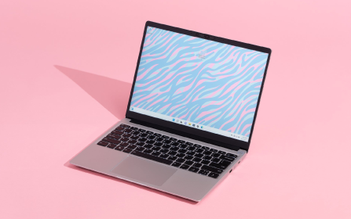

26
მაისი
ვებ გვერდის სტრუქტურისთვის გამოყენებული კონტენტი

1989 წელს ევროპაში, ცერნის ლაბორატორიაში (ფრ. Conseil Européen pour la Recherche Nucléaire, CERN), ტიმ ბერნერეს ლიმ (Sir Timothy John «Tim» Berners Lee) ვებგვერდის (World Wide Web (WWW)) კონცეფცია შეიმუშავა. თუკი მანამდე მეილით ინფორმაციის მხოლოდ კონკრეტული ადრესატისთვის გაგზავნა შეიძლებოდა, ტიმ ბერნერეს ლიმ ინფორმაციის გავრცელების კიდევ უფრო გამარტივება მოინდომა.
მისი იდეა, ერთი შეხედვით, მარტივი და დღევანდელი გადმოსახედიდან სავსებით ბუნებრივი იყო. მეილი ხომ ერთგვარი კომპიუტერული ფაილია, რომელიც გარკვეულ ციფრულ ინფორმაციას მოიცავს. ხომ შეიძლება ეს ფაილი, ინფორმაცია, კონკრეტულ ადრესატს კი არ გავუგზავნოთ, არამედ ინტერნეტში დავდოთ და დაინტერესებულმა პირებმა იქ ნახონ. ვებგვერდი კომპიუტერული ფაილია, რომელიც ინტერნეტის ერთ-ერთ სერვერზე დევს და მისი გახსნა ნებისმიერ მსურველს შეუძლია.
ვებგვერდის ასაწყობად დეველოპერები რამდენიმე პროგრამულ ინსტრუმენტს იყენებენ, რომელთაგან ყველაზე გავრცელებულია:
- ჰიპერტექსტური მარკირების ენა ანუ HTML-ი;
- კასკადური სტილების ცხრილები ანუ CSS-ი;
- კროსპლატფორმული სკრიპტების ენა ანუ JavaScript-ი.
27
მაისი
ვინ არიან და რას აკეთებენ ვებდეველოპერები

იმ ადამიანებს, რომლებიც ვებგვერდის გარეგნულ სახეს ქმნიან, ვებდეველოპერები ჰქვიათ. ასევე მათ ხშირად Front End Developer-ებსაც უწოდებენ, რაც ხაზს უსვამს იმას, რომ ისინი ვებგვერდის Front-ს ანუ იმ ნაწილს ქმნიან, რომელთანაც მომხმარებელი შედის ინტერაქციაში. ზოგისთვის ალბათ უცნაურად ჟღერს, მაგრამ ვებგვერდის აწყობა შემოქმედებითი პროცესია, ვინაიდან ვებდეველოპერს მუდამ ახალი, განსხვავებული ვებგვერდის შექმნა უწევს. ვებდეველოპმენტი როგორც წესი გუნდური საქმიანობაა და რამდენიმე ეტაპისაგან შედგება. ვებდიზაინერები ქმნიან ვებგვერდის დიზაინს. შემდეგ კი ვებდეველოპერები, დამტკიცებული დიზაინის მიხედვით, აწყობენ ვებგვერდს. ამ პროცესში შეიძლება Back-End დეველოპერებიც იყვნენ ჩართულები. როცა ვებგვერდი მზადაა, საქმეში ტესტერები ერთვებიან. ისინი ტესტირების პროცესით ამოწმებენ, რამდენად გამართულად მუშაობს საიტი.
28
მაისი
ვებდეველოპმენტის საფუძვლები
არსებობს წარმოდგენა, რომ ვებგვერდის აწყობა მხოლოდ ტექნიკური განათლების მქონე ადამიანს შეუძლია ისწავლოს. თუმცა, რაც დრო გადის, საპირისპირო სურათს ვხედავთ. სულ უფრო მეტი, სხვადასხვა პროფესიის ადამიანი სწავლობს პროგრამირებას, სხვადასხვა სირთულის აპლიკაციებს ქმნის და თავად აწყობს ვებგვერდებს. ტექნოლოგიების განვითარებამ შესაძლებელი გახადა, რომ სხვადასხვა პროფესიის ადამიანებმა თავად შეძლონ საკუთარი იდეების რეალიზება. თუკი ადრე ინოვაციური იდეის რეალიზებისათვის საჭირო იყო ფინანსები, დღეს ადამიანს შეუძლია, თავად დაეუფლოს იდეის რეალიზებისათვის საჭირო ტექნიკურ ცოდნას, მაგალითად, შეისწავლოს ვებგვერდის აწყობა და შექმნას საკუთარი კომპანიის ვებგვერდი, ააწყოს ონლაინ მაღაზია ან რაიმე სხვა ვირტუალური ონლაინ სერვისი.